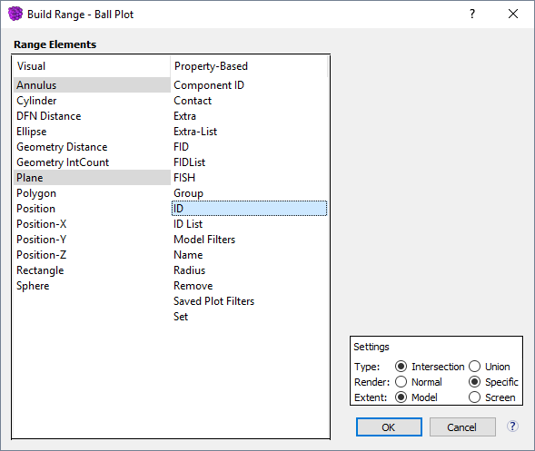

构建范围对话框


图 1：“构建范围”对话框。从左侧列表中选择的项将添加到范围中。可使用 Ctrl 键选择并添加多个元素。
添加范围元素：从列表中单击一个元素以将其选中。
添加多个元素：要添加第二个至第n个元素，请在单击每个要连续添加的元素时按住 Ctrl。
设置
类型——范围是其所有元素的逻辑并集，还是其所有元素的逻辑交集，在此处指定。
渲染——在显示范围时，受其影响的绘图项既可以正常渲染，也可以使用“特定于范围”的渲染模式——后者通常（但并非总是）能带来更快的渲染和对范围更灵敏的交互。这些设置之间的另一个差异是：在“普通”模式下，绘图项位于范围之外的部分会立即从视图中隐藏；在“特定”模式下，这些部分仍然可见，但以透明方式渲染。
范围——添加过滤元素时，将根据此设置，从当前“模型”尺寸计算其默认范围，或根据“屏幕”上当前视图的尺寸计算其默认范围。
在对话框中按下后，所选范围元素将添加到范围中，并列在“绘图项”列表中的“范围”项下方。
对话框中的所有操作/设置在使用该对话框后均可通过i 绘图项（Plot Items）控制集访问和编辑。
| 这些内容对您有帮助吗？… | FLAC3D © 2019, Itasca | 原文更新于 2020 年 10 月 8 日 |